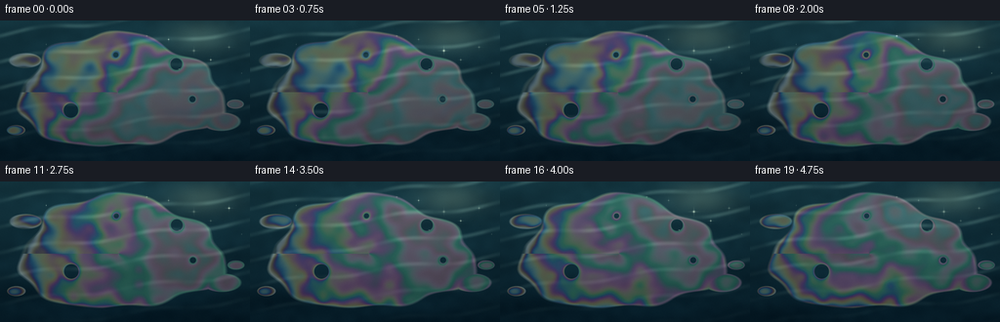
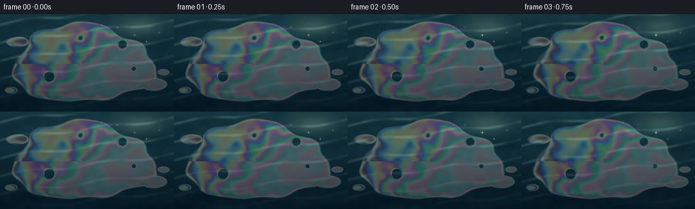

CODING AGENTS AS PIXEL WORLD MODELS
traex/GPT-5.6-Sol · phygen_084
点击播放 · 原生 RGB 像素
逐轮保存的候选
回放视频、检查图与代码变化。
每份候选均可单独播放。实际图片检查记录在下方工具轨迹中。
候选 01播放与检查图
点击播放 · 原生 RGB 像素


展开代码变化
--- 上一保存版本
+++ 本次保存版本
@@ -0,0 +1,215 @@
+"""Procedurally render sunlight on a thin gasoline film floating on water.
+
+The animation is intentionally a restrained macro shot rather than an abstract
+rainbow: a spectral thin-film lookup table supplies the colour, while the
+underlying dark water, transparency, irregular edge and moving highlights keep
+the material readable as a liquid surface.
+"""
+
+from pathlib import Path
+
+import numpy as np
+from PIL import Image
+
+import artifact_io
+
+
+ROOT = Path(__file__).resolve().parent
+W, H, N = 256, 144, 20
+SCALE = 2
+RW, RH = W * SCALE, H * SCALE
+
+
+def smooth_noise(seed: int, grid_w: int, grid_h: int) -> np.ndarray:
+ """Deterministic, low-frequency bicubic noise at render resolution."""
+ rng = np.random.default_rng(seed)
+ small = rng.random((grid_h, grid_w), dtype=np.float32)
+ img = Image.fromarray(np.uint8(np.clip(small, 0, 1) * 255), mode="L")
+ img = img.resize((RW, RH), Image.Resampling.BICUBIC)
+ return np.asarray(img, dtype=np.float32) / 255.0
+
+
+def cie_xyz(wavelength_nm: np.ndarray) -> np.ndarray:
+ """Compact analytic approximation to the CIE 1931 colour matching curves."""
+ w = wavelength_nm
+
+ def g(mu, left, right):
+ sigma = np.where(w < mu, left, right)
+ return np.exp(-0.5 * ((w - mu) / sigma) ** 2)
+
+ x = 1.056 * g(599.8, 37.9, 31.0) + 0.362 * g(442.0, 16.0, 26.7) - 0.065 * g(501.1, 20.4, 26.2)
+ y = 0.821 * g(568.8, 46.9, 40.5) + 0.286 * g(530.9, 16.3, 31.1)
+ z = 1.217 * g(437.0, 11.8, 36.0) + 0.681 * g(459.0, 26.0, 13.8)
+ return np.stack((x, y, z), axis=-1)
+
+
+def interference_lut() -> np.ndarray:
+ """RGB reflection colour for gasoline thicknesses from 0 to 1400 nm."""
+ wl = np.linspace(390.0, 700.0, 79, dtype=np.float64)
+ xyz_bar = cie_xyz(wl)
+ # Slightly warm daylight spectrum.
+ daylight = 1.0 + 0.10 * (wl - 545.0) / 155.0
+ thickness = np.arange(1401, dtype=np.float64)[:, None]
+ # A gasoline refractive index near 1.42. The cosine term approximates the
+ # two reflected rays and the phase reversal at an interface.
+ phase = 4.0 * np.pi * 1.42 * thickness / wl[None, :] + np.pi
+ spectral_reflectance = 0.055 + 0.945 * (0.5 + 0.5 * np.cos(phase))
+ xyz = (spectral_reflectance * daylight[None, :]) @ xyz_bar
+ xyz /= np.sum(xyz_bar[:, 1] * daylight)
+ # XYZ to linear sRGB.
+ mat = np.array([[3.2406, -1.5372, -0.4986],
+ [-0.9689, 1.8758, 0.0415],
+ [0.0557, -0.2040, 1.0570]])
+ rgb = xyz @ mat.T
+ rgb = np.clip(rgb, 0.0, None)
+ # Preserve spectral hue but gently compress gamut into sunlit pastels.
+ lum = rgb @ np.array([0.2126, 0.7152, 0.0722])
+ rgb = 0.72 * rgb + 0.28 * lum[:, None]
+ rgb /= np.maximum(np.percentile(rgb, 99.5), 1e-6)
+ rgb = np.clip(rgb, 0.0, 1.0)
+ rgb = np.where(rgb <= 0.0031308, 12.92 * rgb,
+ 1.055 * np.power(rgb, 1.0 / 2.4) - 0.055)
+ return np.float32(np.clip(rgb, 0, 1))
+
+
+def film_shape(X, Y, boundary_noise, time):
+ """Signed field for one large, irregular slick and a few satellites."""
+ # Almost imperceptible advection to the lower right.
+ xx = X - 0.020 * time
+ yy = Y - 0.008 * time
+ dx, dy = xx + 0.08, yy - 0.03
+ q = np.sqrt((dx / 1.43) ** 2 + (dy / 0.79) ** 2)
+ ang = np.arctan2(dy / 0.79, dx / 1.43)
+ irregular = (0.070 * np.sin(3.0 * ang + 0.6)
+ + 0.038 * np.sin(7.0 * ang - 1.1)
+ + 0.022 * np.sin(11.0 * ang + 1.4)
+ + 0.075 * (boundary_noise - 0.5))
+ signed = 1.0 + irregular - q
+
+ # Small detached beads and wisps make the film's floating nature clear.
+ satellites = [
+ (-1.42 + 0.012 * time, -0.43, 0.23, 0.105),
+ (1.37 + 0.017 * time, 0.44, 0.27, 0.13),
+ (1.57 + 0.015 * time, 0.19, 0.12, 0.065),
+ (-1.55 + 0.010 * time, 0.56, 0.13, 0.07),
+ ]
+ for cx, cy, rx, ry in satellites:
+ bead = 1.0 - np.sqrt(((X - cx) / rx) ** 2 + ((Y - cy) / ry) ** 2)
+ signed = np.maximum(signed, bead * 0.28)
+
+ # Water windows caught inside the slick. They receive thin iridescent rims.
+ holes = [(-0.77, 0.28, 0.105), (0.73, -0.38, 0.085),
+ (0.96, 0.12, 0.045), (-0.13, -0.51, 0.038)]
+ for cx, cy, r in holes:
+ d = np.sqrt((X - cx - 0.012 * time) ** 2 + (Y - cy) ** 2)
+ hole_outside = (d - r) * 2.8
+ signed = np.minimum(signed, hole_outside)
+ return signed
+
+
+def render() -> np.ndarray:
+ yy, xx = np.mgrid[0:RH, 0:RW].astype(np.float32)
+ X = (xx + 0.5 - RW / 2) / (RH / 2) # correct pixel aspect
+ Y = (yy + 0.5 - RH / 2) / (RH / 2)
+
+ boundary_noise = smooth_noise(4, 11, 8)
+ n1 = smooth_noise(17, 15, 10)
+ n2 = smooth_noise(31, 26, 17)
+ water_noise = smooth_noise(93, 33, 21)
+ rng = np.random.default_rng(20261110)
+ fine = rng.normal(0, 1, (RH, RW)).astype(np.float32)
+ lut = interference_lut()
+
+ # Stable locations for small flashes on the moving water.
+ glints = [
+ (0.98, -0.57, 0.016, 0.3), (1.22, -0.44, 0.010, 1.2),
+ (0.62, -0.73, 0.009, 2.1), (1.48, -0.62, 0.013, 3.0),
+ (0.31, -0.78, 0.008, 4.1), (-1.12, -0.66, 0.006, 2.8),
+ (1.66, -0.25, 0.007, 5.0), (0.77, -0.31, 0.005, 0.9),
+ ]
+
+ frames = []
+ for k in range(N):
+ t = k / (N - 1.0)
+ tau = 2.0 * np.pi * t
+
+ # Deep teal water with large, soft travelling undulations.
+ vertical = (Y + 1.0) * 0.5
+ wave = (0.55 * np.sin(8.2 * Y + 1.35 * X - 1.15 * tau)
+ + 0.30 * np.sin(13.0 * Y - 2.1 * X - 1.75 * tau + 0.8)
+ + 0.15 * np.sin(20.0 * Y + 3.7 * X - 2.25 * tau))
+ base = np.empty((RH, RW, 3), np.float32)
+ top = np.array([22.0, 59.0, 70.0], np.float32)
+ bottom = np.array([5.0, 27.0, 39.0], np.float32)
+ base[:] = top[None, None, :] * (1.0 - vertical[..., None]) + bottom[None, None, :] * vertical[..., None]
+ base += wave[..., None] * np.array([2.3, 4.8, 5.4])
+ base += (water_noise - 0.5)[..., None] * np.array([2.2, 4.0, 4.2])
+
+ # Long, broken sunlight streaks that track ripple crests.
+ ripple_phase = np.sin(17.0 * Y + 2.0 * X - 2.0 * tau + 0.6 * np.sin(4.0 * X))
+ crest = np.power(np.clip((ripple_phase - 0.56) / 0.44, 0, 1), 3.0)
+ upper_light = np.clip(1.0 - (Y + 0.25) * 0.75, 0.12, 1.0)
+ broken = 0.35 + 0.65 * np.clip(0.5 + 0.7 * np.sin(7.0 * X - 0.4 * tau) + 0.25 * n2, 0, 1)
+ base += (crest * upper_light * broken)[..., None] * np.array([31.0, 36.0, 31.0])
+
+ signed = film_shape(X, Y, boundary_noise, t)
+ mask = np.clip(0.5 + signed * 28.0, 0.0, 1.0)
+ edge = np.exp(-np.square(signed * 39.0))
+
+ # Slowly evolving thickness field: overlapping advection, eddies and a
+ # broad spiral yield the characteristic curved interference bands.
+ cx, cy = -0.10 + 0.020 * t, 0.02 + 0.008 * t
+ radius = np.sqrt((X - cx) ** 2 + (Y - cy) ** 2)
+ theta = np.arctan2(Y - cy, X - cx)
+ flow = (0.36 * X - 0.17 * Y
+ + 0.22 * np.sin(2.15 * Y + 0.70 * np.sin(1.8 * X) - 0.42 * tau)
+ + 0.15 * np.sin(1.55 * X + 2.75 * Y + 0.30 * tau)
+ + 0.24 * (n1 - 0.5) + 0.11 * (n2 - 0.5)
+ + 0.085 * theta * np.exp(-0.75 * radius)
+ + 0.050 * np.sin(5.0 * radius - theta - 0.55 * tau))
+ flow = np.clip(0.5 + 0.54 * flow, 0.0, 1.0)
+ thickness = 115.0 + 1080.0 * flow
+ # Thinning around boundaries/holes creates a narrow multicolour rim.
+ thickness -= 175.0 * np.exp(-np.abs(signed) * 11.0)
+ thickness = np.clip(thickness, 0, 1400).astype(np.int16)
+ spectral = lut[thickness]
+
+ # Sun comes from the upper right, brightening the transparent film.
+ sun_wash = np.exp(-(((X - 1.12) / 1.20) ** 2 + ((Y + 0.78) / 0.66) ** 2))
+ spectral_light = 0.77 + 0.20 * sun_wash + 0.06 * (1.0 - vertical)
+ spectral255 = spectral * (152.0 * spectral_light[..., None])
+ # Reflection on top of visible water: enough colour to be legible, but
+ # still visibly a very thin and transparent layer.
+ film_surface = base * 0.69 + spectral255 * 0.78
+ film_surface += edge[..., None] * np.array([28.0, 31.0, 24.0])
+ result = base * (1.0 - mask[..., None] * 0.82) + film_surface * (mask[..., None] * 0.82)
+
+ # Broad warm solar reflection and several tiny, coherent star glints.
+ bloom = np.exp(-(((X - 1.08) / 0.48) ** 2 + ((Y + 0.76) / 0.22) ** 2))
+ result += bloom[..., None] * np.array([37.0, 35.0, 24.0])
+ for gx, gy, size, phase in glints:
+ flicker = 0.35 + 0.65 * (0.5 + 0.5 * np.sin(tau * 1.35 + phase)) ** 5
+ dx, dy = X - gx, Y - gy
+ core = np.exp(-(dx * dx + dy * dy) / (size * size))
+ cross = (np.exp(-(dx / (size * 0.30)) ** 2 - (dy / (size * 3.4)) ** 2)
+ + np.exp(-(dx / (size * 3.8)) ** 2 - (dy / (size * 0.30)) ** 2))
+ sparkle = flicker * (core + 0.38 * cross)
+ result += sparkle[..., None] * np.array([128.0, 125.0, 102.0])
+
+ # Optical vignette and very fine sensor-like texture prevent flat CG
+ # gradients without drawing attention from the liquid motion.
+ vignette = 1.0 - 0.12 * np.clip((X / 1.90) ** 2 + (Y / 1.18) ** 2, 0, 1)
+ result *= vignette[..., None]
+ result += fine[..., None] * 0.65
+ result = np.clip(result, 0, 255).astype(np.uint8)
+ frame = Image.fromarray(result, mode="RGB").resize((W, H), Image.Resampling.LANCZOS)
+ frames.append(np.asarray(frame, dtype=np.uint8))
+
+ return np.stack(frames, axis=0)
+
+
+if __name__ == "__main__":
+ output = render()
+ artifact_io.save(output, ROOT)
+ print(f"saved {output.shape[0]} RGB frames at {output.shape[2]}x{output.shape[1]}")
+
可观测工具轨迹
实际执行的命令与返回图片。
命令 1exit 0
/bin/bash -lc 'cat GENERATION_RULES.md'
命令 2exit 0
/bin/bash -lc "cat prompt.txt && printf '\\n--- task_spec.json ---\\n' && cat task_spec.json"
命令 3exit 0
/bin/bash -lc "find . -maxdepth 2 -type f -printf '%p\\n' | sort && printf '\\nTOOLS\\n' && command -v ffmpeg || true && command -v blender || true && command -v convert || true && python3 - <<'PY' mods=['numpy','PIL','cv2','cairo','moviepy'] for m in mods: try: x=__import__(m); print(m,'OK',getattr(x,'__version__','')) except Exception as e: print(m,'NO',e) PY"
命令 4exit 0
/bin/bash -lc "sed -n '1,260p' artifact_io.py"
命令 5exit 0
/bin/bash -lc 'python3 generate.py'
命令 6exit 127
/bin/bash -lc 'command -v chafa || true; command -v viu || true; command -v img2txt || true; file inspection.png index.html pixels.npz'
命令 7exit 0
/bin/bash -lc "find . -maxdepth 2 -type f -printf '%p %s bytes\\n' | sort && python3 - <<'PY'
import numpy as np
z=np.load('pixels.npz')['pixels']
print('pixels tensor',z.shape,z.dtype,'packed range',hex(int(z.min())),hex(int(z.max())))
PY"命令 8exit 0
/bin/bash -lc "python3 - <<'PY'
from pathlib import Path
import numpy as np
from PIL import Image
p=Path('.')
a=np.stack([np.asarray(Image.open(p/'frames'/f'{i:02d}.png').convert('RGB')) for i in range(20)])
print('shape/dtype',a.shape,a.dtype)
print('global min/max/mean',a.min(),a.max(),a.mean(axis=(0,1,2)).round(2))
print('percentiles',np.percentile(a,[1,5,25,50,75,95,99]).round(1))
# HSV saturation and colorful-pixel fraction
import cv2
hsv=np.stack([cv2.cvtColor(x,cv2.COLOR_RGB2HSV) for x in a])
print('sat mean, p95, frac>80',hsv[...,1].mean().round(2),np.percentile(hsv[...,1],95).round(1),(hsv[...,1]>80).mean().round(3))
d=np.abs(np.diff(a.astype(np.int16),axis=0))
print('adjacent abs diff mean/max',d.mean().round(3),d.max(), 'moving pixel frac', (d.max(axis=-1)>3).mean().round(3))
print('first-last MAD',np.abs(a[0].astype(int)-a[-1].astype(int)).mean().round(3))
for i in [0,3,6,9,12,15,19]: print(i,a[i].mean(axis=(0,1)).round(1),hsv[i,...,1].mean().round(1))
PY"命令 9exit 0
/bin/bash -lc "python3 - <<'PY' import generate, numpy as np x=generate.interference_lut() for t in range(0,1401,100): print(t,(x[t]*255).astype(int)) PY"
保存候选 1 份；完成命令 9 次；可验证图片返回 0 张。原始 API 响应与完整日志保留在本地。